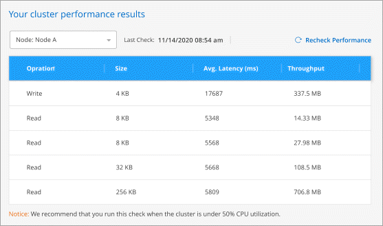

What’s new in Cloud Manager 3.9
Contributors
 Download PDF of this page
Download PDF of this page
Cloud Manager typically introduces a new release every month to bring you new features, enhancements, and bug fixes.
|
Looking for a previous release? What’s new in 3.8 What’s new in 3.7 |
Cloud Manager 3.9.3 update (16 Feb 2021)
Cloud Backup Service enhancements
-
Now you can restore volumes to on-premises ONTAP systems from backup files that reside in Amazon S3, Azure Blob, and Google Cloud Storage.
-
A new Restore Dashboard has been added that provides details about all the volumes and files you have restored.
The Dashboard is also the starting place to perform all volume and file restore operations. See the Restore Dashboard for details. In previous releases the restore volumes option was included in the Backup Dashboard.
-
Cloud Backup is now supported on Cloud Volumes ONTAP HA systems in Google Cloud.
Cloud Manager 3.9.3 update (14 Feb 2021)
Cloud Compliance enhancements
-
View and manage Azure Information Protection (AIP) labels in files you are scanning.
-
After you integrate the AIP label functionality into Cloud Compliance, you can view the labels that are assigned to files, add labels to files, and change labels. See how to integrate AIP labels in your workspace.
-
Assign labels individually to files, or use the Highlights functionality to add labels to all files that match the Highlight criteria. With Highlights, labels are updated continuously as Cloud Compliance finds matches in your files.
-
Filter data in the Investigation page by AIP label to view all files that match the label.
-
-
Send email alerts to Cloud Manager users (daily, weekly, or monthly) when any of your Highlights return results so you can get notifications to protect your data.
Select this option when creating or editing any highlight.
-
View File Owner and Permission information when viewing individual file details.
You can also use this criteria to further filter your data in the Investigation page.
-
Delete files directly from Cloud Compliance.
You can permanently remove files that seem insecure or risky to leave in your storage system.
Cloud Manager 3.9.3 update (10 Feb 2021)
Cloud Tiering enhancements
-
Cloud Tiering now activates write-back prevention on a cluster when an aggregate is at >90% capacity (70% for ONTAP 9.6 and earlier). By preventing cold data write-backs on heavily utilized local tiers, Cloud Tiering preserves the local tier for active data.
When this happens, an indication appears in the Manage Aggregates table.
-
You can now add on-prem ONTAP clusters more easily from the Cloud Tiering service.
When you click Add cluster from the Cloud Tiering page, you’re now sent directly to the Add Working Environment wizard.
-
You can now filter the Timeline to show actions specific to the Cloud Tiering service.
Cloud Sync enhancements
-
We’ve simplified the process for syncing data to or from Cloud Volumes ONTAP. You can now select a Cloud Volumes ONTAP working environment and choose an option to sync data to or from this working environment.

-
In the last release, we introduced a new Reports feature that provides information that you can use with the help of NetApp personnel to tune a data broker’s configuration and improve performance. These reports are now supported with object storage.

Cloud Manager 3.9.3 (9 Feb 2021)
Monitoring enhancements
-
The Monitoring service is now supported with Cloud Volumes ONTAP for Azure.
-
The Monitoring service is also supported in Government regions in AWS and Azure.
The Monitoring service gives you complete visibility into your Cloud Volumes ONTAP infrastructure. Enable the service to monitor, troubleshoot, and optimize your Cloud Volumes ONTAP resources.
Support improvements
We’ve updated the Support Dashboard by enabling you to add your NetApp Support Site credentials, which registers you for support. You can also initiate a NetApp Support case directly from the dashboard. Just click the Help icon and then Support.

Cloud Manager 3.9.2 update (11 Jan 2021)
Cloud Compliance enhancements
-
Added support for scanning Microsoft OneDrive accounts.
Now you can add your corporate OneDrive accounts to Cloud Compliance in order to scan folders and files from all your OneDrive users. See scanning OneDrive accounts for details.
-
The "Highlights" feature now allows you can create your own custom Highlights that provide results for searches specific to your organization.
In the last release, Cloud Compliance provided a set predefined highlight filters that all users could use. Now you can create your own Highlights to return specific scan results in the Investigation page. See how to create your own custom highlights.
-
Ability to scan backup files from on-premises ONTAP systems for free.
If you don’t want Cloud Compliance to scan volumes directly on your on-prem ONTAP systems, a new Beta feature released this month allows you to run compliance scans on backup files created from your on-prem ONTAP volumes. So if you’re already creating backups of your on-prem ONTAP volumes using Cloud Backup, you can use this new feature to run compliance scans on those backup files - for FREE.
See how to back up on-prem ONTAP volumes to object storage and how you can scan those backup files.
-
Cloud Compliance can now find the personal data type "IP Address" in files. See the list of all personal data types that Cloud Compliance finds in scans.
Cloud Backup enhancements
You can restore individual files to additional destination working environments:
-
Backup files in Azure Blob can be used to restore individual files to Cloud Volumes ONTAP systems installed on Azure, and to on-premises ONTAP systems.
-
Backup files in Amazon S3 can be used to restore individual files to on-premises ONTAP systems (restoring files to Cloud Volumes ONTAP systems installed on AWS was already supported).
View the backup and restore matrix to see which working environments are supported for creating backups, restoring volumes, and restoring files.
Cloud Manager 3.9.2 (4 Jan 2021)
Cloud Volumes ONTAP enhancements
This release of Cloud Manager introduces the following enhancements for Cloud Volumes ONTAP.
Support for AWS Outposts
A few months ago, we announced that Cloud Volumes ONTAP had achieved the Amazon Web Services (AWS) Outposts Ready designation. Today, we’re pleased to announce that we’ve validated Cloud Manager and Cloud Volumes ONTAP with AWS Outposts.
If you have an AWS Outpost, you can deploy Cloud Volumes ONTAP in that Outpost by selecting the Outpost VPC in the Working Environment wizard. The experience is the same as any other VPC that resides in AWS. Note that you will need to first deploy a Connector in your AWS Outpost.
There are a few limitations to point out:
-
Only single node Cloud Volumes ONTAP systems are supported at this time
-
The EC2 instances that you can use with Cloud Volumes ONTAP are limited to what’s available in your Outpost
-
Only General Purpose SSDs are supported at this time
Support for Ultra SSD VNVRAM in all supported Azure regions
Cloud Volumes ONTAP can now use an Ultra SSD as VNVRAM when you use the E32s_v3 VM type with a single node system in any supported Azure region.
VNVRAM provides better write performance.
Ability to choose an Availability Zone in Azure
You can now choose the Availability Zone in which you’d like to deploy a single node Cloud Volumes ONTAP system. If you don’t select an AZ, Cloud Manager will select one for you.

Support for bigger disks and new instances in GCP
-
Cloud Volumes ONTAP now supports 64 TB disks in GCP.
The maximum system capacity with disks alone remains at 256 TB due to GCP limits. -
Cloud Volumes ONTAP now supports the following machine types:
-
n2-standard-4 with the Explore license and with BYOL
-
n2-standard-8 with the Standard license and with BYOL
-
n2-standard-32 with the Premium license and with BYOL
-
Cloud Tiering enhancements
-
A new Cloud Performance Test gives you the ability to measure network latency and throughput performance from an ONTAP cluster to an object store before and after setting up data tiering.

-
The Tiering Setup wizards were redesigned for ease of use.
Additional enhancements
-
New Support Dashboard
In the Help menu, a new Support Dashboard includes links to resources that can enable you to get help, submit feedback, and contact NetApp Support. You can also send and download AutoSupport messages from the Connector AutoSupport tab.
-
Visual representation between working environments
Cloud Manager makes it easier to view the relationships between the services enabled on your working environments.
For example, the following image shows an example of two working environments where data is backed up from Cloud Volumes ONTAP to Amazon S3, and where data is synced between Amazon S3 and two Cloud Volumes ONTAP systems.

Cloud Manager 3.9.1 (7 Dec 2020)
General enhancements
-
We’ve renamed the Working Environments tab to Canvas.
This tab starts as a blank canvas and enables you to add your working environments by deploying, allocating, and discovering storage across your hybrid cloud.
-
It’s now easier to navigate between Cloud Manager and Spot.
A new Storage Operations section in Spot enables you to navigate directly to Cloud Manager. After you’re done, you can get back to Spot from the Compute tab in Cloud Manager.
Cloud Volumes ONTAP AMI change
Starting with the 9.8 release, the Cloud Volumes ONTAP PAYGO AMI is no longer available in the AWS Marketplace. If you use the Cloud Manager API to deploy Cloud Volumes ONTAP PAYGO, you’ll need to subscribe to the Cloud Manager subscription in the AWS Marketplace before deploying a 9.8 system.
Cloud Backup enhancements
-
You now have the ability to restore individual files from a backup file.
-
If you need to restore a few files from a certain point in time, now you can just restore those files instead of having to restore the whole volume.
-
You can restore the files to a volume in the same working environment, or to a volume in a different working environment that’s using the same cloud account.
-
This single file restore option relies on a new Cloud Restore instance that is deployed in your environment. Go here for details about this new functionality.
-
-
You can configure Cloud Backup in a Google Cloud environment now while deploying a new Cloud Volumes ONTAP system. In the past you could only configure Cloud Backup on existing Cloud Volumes ONTAP systems.
-
Now you can restore volumes that you had backed up from on-prem ONTAP systems to Cloud Volumes ONTAP systems deployed in AWS or Azure.
Cloud Compliance enhancements
-
Ability to scan data directly from your on-premises ONTAP clusters
If you have discovered your on-prem clusters in Cloud Manager, now you can run Compliance scans directly on those volumes. No longer do you have to copy those volumes to a Cloud Volumes ONTAP system before you can run a Compliance scan.
-
Ability to install Cloud Compliance in your on-premises location
If you plan to scan on-premises ONTAP cluster data, now you can install Cloud Compliance on-premises as well. It is still integrated in the Cloud Manager UI and it can still be used to scan other working environments, including cloud based volumes, buckets, and databases.
-
Ability to easily scan CIFS data protection volumes
In the past you have been able to scan NFS DP volumes. This release allows you to easily scan CIFS DP volumes directly within Cloud Compliance. Learn how.
-
A new "Highlights" feature provides a predefined selection of combination filters that return results in the Investigation page
Ten highlights are available with this release. For example, the "HIPAA – Stale data over 30 days" highlight identifies files that contain Health information that is over 30 days old. See the full list of predefined highlights.
You can select Highlights from a tab in the Compliance Dashboard and as a filter in the Investigation page.
-
Cloud Compliance can now find the sensitive personal data type "Political Opinions Reference" in files. See the list of all sensitive personal data types that Cloud Compliance finds in scans.
-
A new filter for "file size" is available from the Investigation page to refine your search results for files of a certain size
Note that the list of required endpoints for Cloud Compliance deployments has been revised based on cloud provider. Review this list for AWS, Azure, and on-prem requirements.
Cloud Tiering enhancements
-
You can now change the tiering policy and minimum cooling days for multiple volumes at the same time.
-
Cloud Tiering now provides an aggregated view of data tiering from each of your on-premises clusters. This overview provides a clear picture of your environment and enables you to take proper actions. Learn more about this page.

Cloud Sync enhancements
-
You can now manage data broker groups.
Grouping data brokers together can help improve the performance of sync relationships. Manage groups by adding a new data broker to a group, viewing information about data brokers, and more.
-
Cloud Sync now supports an ONTAP S3 Storage to ONTAP S3 Storage sync relationship.
Cloud Manager 3.9 Update (18 Nov 2020)
Cloud Backup is now supported on Cloud Volumes ONTAP in Google Cloud. Click here for details.
Note: Only single-node systems are currently supported.
Cloud Volumes ONTAP 9.8 (16 Nov 2020)
Cloud Volumes ONTAP 9.8 is available in AWS, Azure, and Google Cloud Platform. This release includes support for HA pairs in GCP.
| The GCP service account associated with the Connector needs the latest permissions to deploy an HA pair in GCP. |
Cloud Manager 3.9 update (8 Nov 2020)
We released an enhancement to Cloud Manager 3.9.
Cloud Compliance enhancements
-
Now you can create custom personal data identifiers from your databases. This gives you the full picture about where potentially sensitive data resides in all your files.
A feature we call "Data Fusion" allows you to scan your files to identify whether unique identifiers from your databases are found in those files—basically making your own list of "personal data" that is identified in Cloud Compliance scans.
-
Added support for scanning MySQL database schemas.
Go to scanning database schemas for the list of all supported databases and for instructions.
Cloud Manager 3.9 (3 Nov 2020)
Azure Private Link for Cloud Volumes ONTAP
By default, Cloud Manager now enables an Azure Private Link connection between Cloud Volumes ONTAP and its associated storage accounts. A Private Link secures connections between endpoints in Azure.
Active IQ cluster insights
Active IQ cluster insights are now available within Cloud Manager. This initial release provides the following functionality:
-
Shows a list of your on-prem clusters based on your NetApp Support Site (NSS) credentials.
-
Identifies which of those clusters have been discovered within Cloud Manager, and those that have not been discovered.
-
Enables you to view unused Cloud Volumes ONTAP licenses.
-
Identifies if any of your discovered ONTAP clusters need to have their shelf or disk firmware updated.
Go to Monitoring ONTAP clusters for details. This information is provided to Cloud Manager from the Active IQ Digital Advisor.
Cloud Tiering enhancements
-
When you set up data tiering from your volumes, Cloud Tiering now identifies the Snapshot used size for each volume. This information can help you decide which type of data to tier to the cloud.

-
Cloud Tiering now enables inactive data reporting on HDD aggregates, if the cluster is running ONTAP 9.6 or later.
This enhancement makes it easier for Cloud Tiering to show you the potential savings from tiering cold data.
-
Cloud Tiering now prompts you to change thick-provisioned volumes to thin-provisioned volumes, if that’s required to enable data tiering on the volumes in an aggregate.
 Edit on GitHub
Edit on GitHub